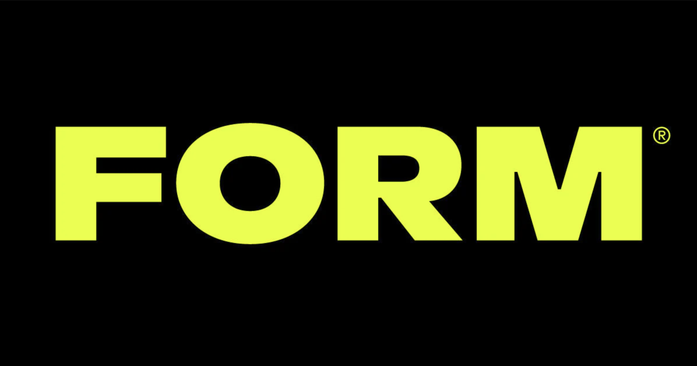
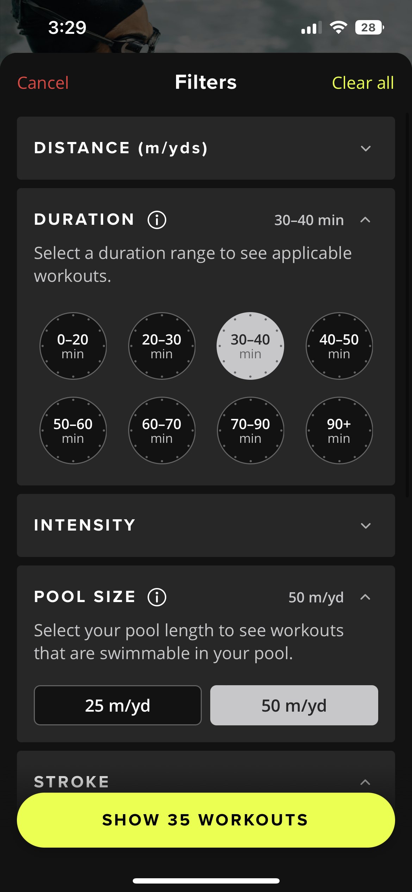
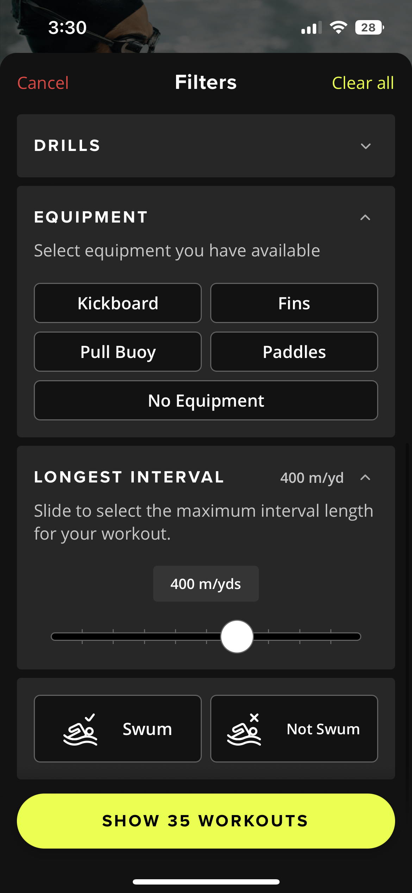
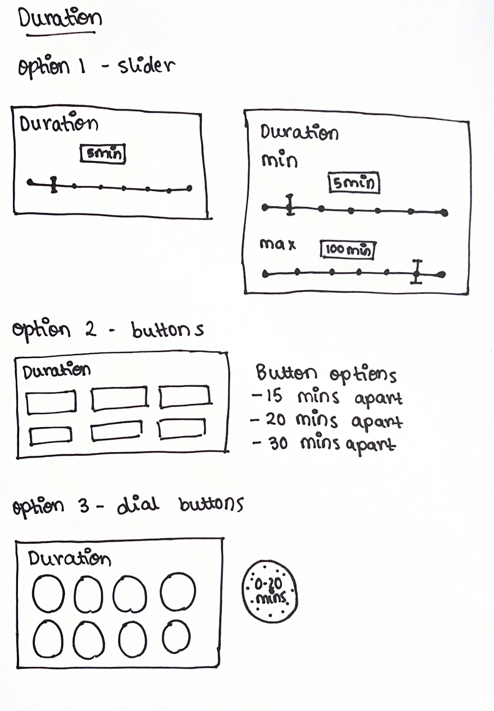
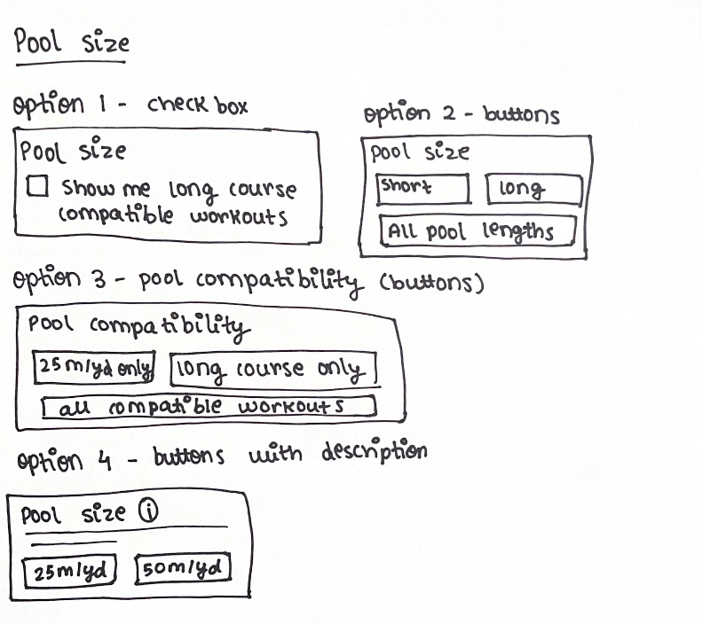
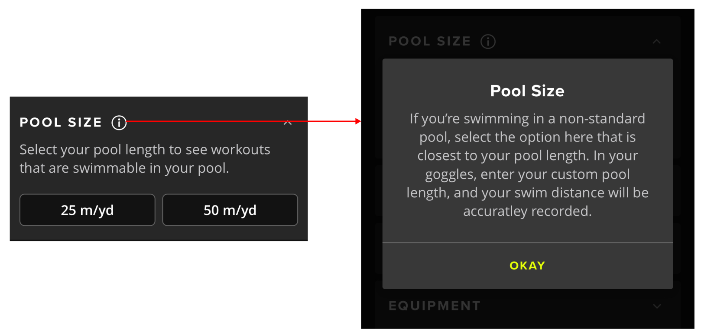
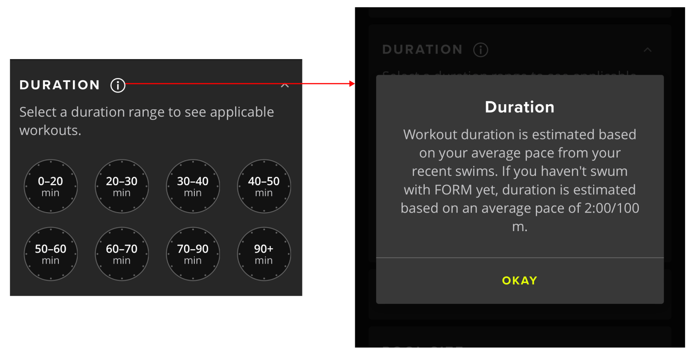
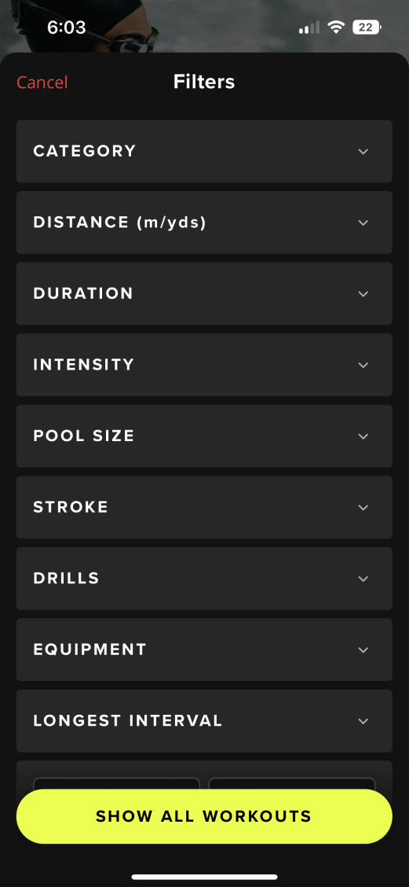
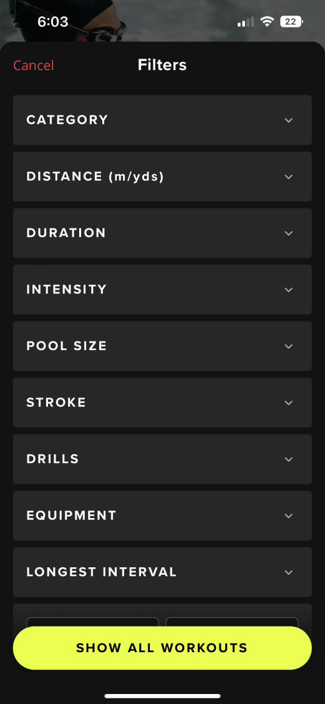
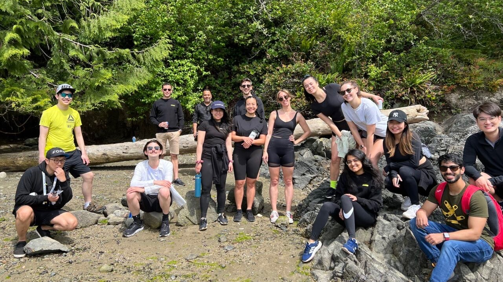

About the internship
Last summer, I had a fantastic opportunity
to intern at FORM as a digital product designer. I met some amazing
people there who helped me grow as a designer, and I will always be
grateful for this chance I got.
My primary responsibilities were working
closely with other Product team members to brainstorm ideas to
improve the swim experience for users. Secondly, to craft UX
deliverables such as annotated user flows and wireframes to
effectively communicate design ideas. Lastly, to deliver
high-fidelity UI designs for iOS, Android and FORM goggles.
This summer, I had a fantastic opportunity to intern at FORM
as a digital product designer. I met some amazing people there
who helped me grow as a designer, and I will always be grateful
for this chance I got.
What did I do?


Workout Filters were the main feature I worked on at FORM. From understanding
technical swim terms to ad-hoc user testing and prototyping, I was responsible
for the design process. The main goal to accomplish with these filters was to
enable swimmers to find the best workout for their next swim. I designed 6
filters: Duration, Pool Size, Stroke, Drills, Equipment, and Longest Interval.
My process started with analyzing how FORM's competitors use filters on their apps.
The most challenging filters to design were duration, pool size and longest interval.
Here are a few of my sketches/iterations of some filters.


After prototyping the potential sketches, I also conducted ad-hoc usability
tests with swimmers in the office to create the best user filters. This helped
me understand the different pain points and requirements of swimmers. Based on
the user testing, I concluded that potential users might need more context for
some filters. Hence I added more information via the tooltip icon, as shown below.


Initially, the application had only 3 filters, and after the addition of 6 filters,
the filter page was long, and the user had to scroll for a while to see the last filter.
Therefore, made the filter page in an accordion style to make the filtering process easy
with utmost transparency.
 

What did I learn?
1. Use a design system on Figma properly.
I was exposed to a design
system more extensive than I had ever used before. I learned how
to use components, instances and variants, which helped me be more
consistent and detail-oriented.
2. Communicate design ideas clearly, confidently and effectively.
As a designer, it was essential for me to learn
the art of presenting designs well to the team and effectively
conveying my idea. Unfortunately, it took some time for me to be
organized and efficient in this matter. But now, I can
present my designs confidently and say why a particular idea works
to improve user experience. I realised that 90% of the process of designing
is communication!

Group photo from FORM Retreat, my favourite memory (May 2022)